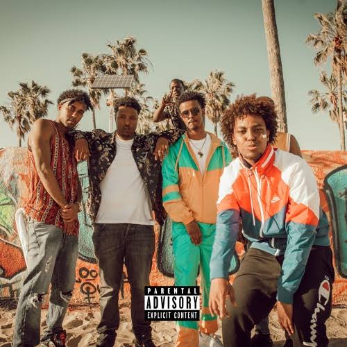
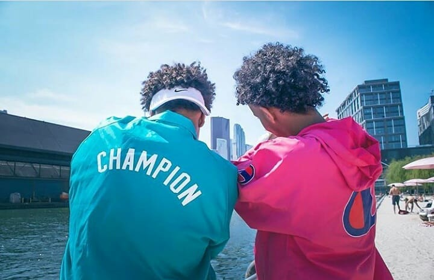

Ever imagined the word Somali put in the same place with Hiphop? Me too. Never in my life. Not until i had of hanadz band.
This is a group of young Somali boys who were raised in Kenya. They later relocated to the United States of America at a young age.
The fact that we have the same ethnic background in addition to the fact the fact that my favourite music is hip hop makes them my all time favourites.
They rose to fame in 2018 and and tool Minnesota State in the united state.
They have so many albums that would make you love them. they include;
